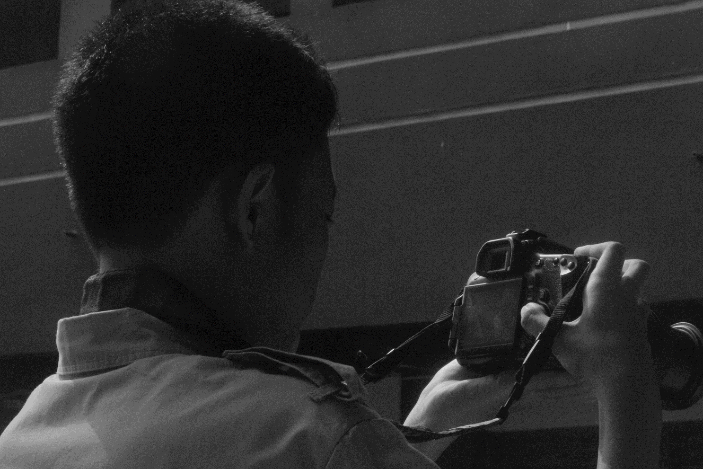
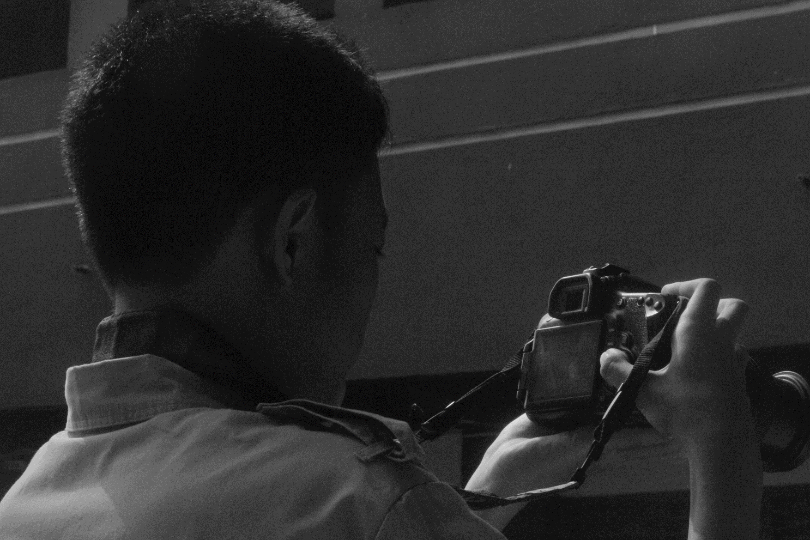

Akhmad Zaky Maulana
lahir 2008 Bekasi, Indonesia.
Akhmad Zaky Maulana adalah seniman, musisi, fotografer, dan juga siswa di SMK Al-Muhtadin dan mengambil jurusan Desain Komunikasi Visual.
Kadang ia suka mengunci dirinya di kamar sepanjang hari untuk membuat mahakarya yang [mungkin] orng-orang akan menyukainya.
Seni menjadi hobi dia saat ia berumur 11 tahun. Semuanya berawal dari proyek kecil yang ia kerjakan. Yaitu membuat avatar Minecraft. Mengapa ia memiliki hobi menggambar? Karena temannya yang waktu itu di bangku Kelas 5 bisa menggambar.
Ia mulai membuat dan merekam musik pada saat umur 14 tahun, karena ia sangat terinspirasi oleh musisi elektronik dari Inggris. Beliau adalah Aphex Twin atau bisa dipanggil Richard David James. "Beliau [Aphex Twin] adalah Bapak dari Musisi Elektronik" ujar Akhmad Zaky Maulana. Ia juga terinspirasi oleh musisi seperti Squarepusher, Autechre, Imaginary Softwoods, dan Steve Hauschildt.
Fotografi juga hobi favorit dia selain membuat musik. Ia tidak mempunyai kamera, tetapi ia memotret semua foto menggunakan ponsel pribadi dia. Di karya dia, ia memotret semua yang menurut dia menarik untuk difoto. Pantas saja hard disk yang ia gunakan selalu penuh penyimapanannya. Langit biru, awan tebal, rumput ilalang, dan sinar Matahari adalah subjek favorit dia untuk dipotret. Karena menurut dia 'subjek tersebut menunjukkan sisi damai di planet Bumi ini'
Sinar matahari menghangatkan tubuh saya, langit adalah hiburan saya dan rumput adalah tempat di mana saya berdiam untuk istirahat.
Selain tertarik di bidang seni dan musik, ia juga tertarik di bidang 'komputer' dan pemrograman. Di tahun 2010, kakak perempuan dia mulai memperkenalkan dia bagaimana cara mengoperasikan komputer. Di masa itu, mereka masih menggunakan Windows XP. Ia mengatakan bahwa pengetahuan tentang 'komputer' itu lebih tinggi dibandingkan dengan kakak perempuannya yang sebelumnya belajar IT. Pemrograman menjadi hobi dia karena adanya pandemi COVID-19. Ia tidak tahu apa yang dia ingin lakukan selain menyelesaikan tugas sekolah online nya. Ia belajar HTML karena menurut dia mudah untuk diprogram. Proyek HTML pertama dia hanya biografi ia sendiri dengan desain CSS yang sangat jelek. Sampai sekarang, HTML menjadi berguna untuk dia karena ia bisa menunjjukan karya dia melalui website yang ia program.
 

[html]
[css]
[adobe illustrator]
[adobe photoshop]
[menggambar secara digital]
[menggambar secara tradisional]
Copyright © Akhmad Zaky Maulana 2024 ∣ Hosted by Neocities.